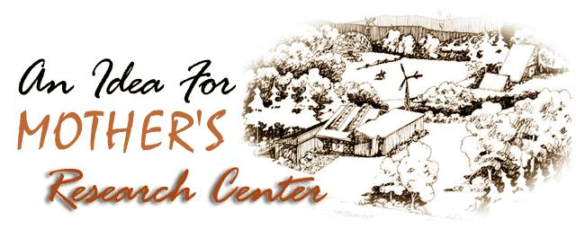

I agree with Dr. Borsodi (MOTHER NO. 26) and other people you have interviewed about the urgency of the world situation. Many of us can see that the whole social, industrial and bureaucratic order must be changed if we are to survive . . . and it appears to me that those who see this necessity should be doing something about it.
I think your project for a research center is a fine idea but doesn't go far enough. For me, it's essential that such an establishment should be a demonstration of rural, democratic, decentralized, ecological, organic living. This country is in great need of proof that "utopian" groups can make it (and, in fact, are not utopian at all in the usual sense of the word).
I propose that-instead of just carrying on research and continuing the publication of THE Mother Earth News (restricted) -you get together a decent number of people (say up to 5,000) and show that it's possible to live and produce one's needs in a sane and responsible way. This could be done by having 1,000 families invest $10,000 each and move gradually to the place selected, so as not to overburden it. If any person or family refused to work, stole or disrupted the community, the group could vote the troublemaker out and refund the money in some manner previously agreed upon.
I believe that there are a sufficient number of people who would be willing to invest their money, skills and hard work in such a venture. My wife and I, and our son, are among them, and we'd work like the devil to make it happen. The alternative for folks like us is to go it alone, or maybe with a few friends or people we contact through MOTHER. Many seem to be taking this course, isolating as it is. Self-sufficiency on this level is a satisfactory way of life for us . . . but if things are really as serious as I think they are, we should be making a maximum effort to put our ideas into action on a larger scale.
Your organization, it seems to me, is about the only one that could pull off such a project. If the experiment were successful, the original group could spin off another to do the same thing elsewhere . . . and we just might be able to accelerate sanity in this country.
George F. Elmendorf
Toledo, Ohio
OK, George. Good idea. You just may have given us the idea we need to make our Research Center dreams come true almost immediately . . . instead of over a period of the next several years.
How about it, folks? How many of you would be willing to invest $10,000 in, say, a two-to-five-acre corner of a 1,000+ acre Research Center/Mountain Community? If that $10,000 bought you a 99 year lease on your acreage and the right to use the hiking trails, meeting hall, greenhouses, tennis courts, small lake and other common facilities on the main grounds? And if you were required to build your home/homestead to very strict standards: No automobiles allowed at the Center (only bicycles, foot traffic, horses and-maybe for the infirm-small electric cars), every house restricted to solar, wind, water, methane or other "alternative" sources of energy, no chemicals allowed in the gardens, etc. ?
How about it? Would you be as interested as George and his family in living in such a community? Would you be interested $10,000-plus-the-cost-of-your-house worth? If so, write and tell John Boll, Director of Research and Development, THE Mother Earth News, P.O. Box 552, Flat Rock, North Carolina 28731.-MOTHER.
|
 |
|
|